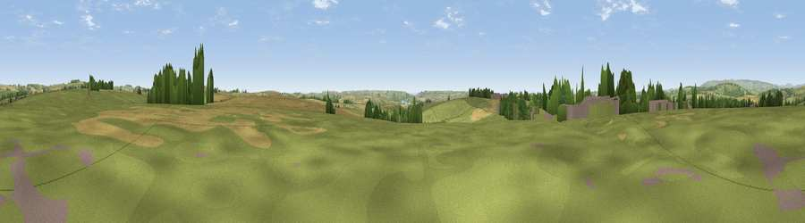

Viewpoint near East Allington
#16985 in England · top 39% of its area beats it · near East Allington · access?Where it is
The exact computed spot (SX 74775 47825). Click the marker for map links.
Public access: no public right of way or access land is recorded at this exact spot — it may be on private land. Computed from Natural England's CRoW access layer and OpenStreetMap rights of way — not the legal definitive map. Always verify locally.
The view, rendered

A 360° render of this exact spot computed from the terrain model, tree cover and land cover — summer colours, afternoon light, calibrated against photographs of famous viewpoints. Real trees, hedges and buildings will differ in detail.
The panorama
Grey silhouette: terrain skyline in each direction (720 bearings, Earth curvature and refraction included). Dashed green: skyline with trees (+15 m) and buildings (+8 m) as obstacles. Blue strip: how far the ground is visible on each bearing.
Where the view opens
Wedge length = distance to the farthest visible ground on that bearing (vegetation-aware). Rings at 10, 25 and 50 km.
What fills the view
58% grassland · 30% cropland · 10% woodland · 2% built-up ·
Angular shares of the visible panorama (visual magnitude), not map area. Landscape diversity 0.44 (0–1 Shannon).
Key numbers
More beautiful places nearby
The staircase of upgrades: each row has a higher view potential than everything closer. Driving times are estimates from straight-line distance, calibrated against real road routing — check an actual route before setting out.
| Place | Direction | Drive | Score |
|---|---|---|---|
| Viewpoint near East Allington | E · 3 km | ~8 min | 61.9 |
| Viewpoint near East Allington | E · 4 km | ~9 min | 68.3 |
| Viewpoint near Moreleigh | N · 4 km | ~10 min | 69.3 |
| Viewpoint near Halwell | NE · 5 km | ~11 min | 71.3 |
| Viewpoint near Moreleigh | NNE · 6 km | ~13 min | 74.0 |
| Viewpoint near Slapton | ESE · 7 km | ~15 min | 75.7 |
| Viewpoint near Strete | E · 9 km | ~17 min | 76.5 |
| Viewpoint near Bigbury-on-Sea | WSW · 10 km | ~19 min | 76.8 |
50.31703, -3.76026 · source: screening · position refined by local search. Computed location — check access rights before visiting.